Vídeo de 5:02 com a sua voz (cortes padrão, pausas de transição entre as etapas). Cada quadro é um frame real do render. Falta depois da aprovação: legendas, música, efeitos e render em alta.
O copo e o gráfico da questão já aparecem prontos. A água sobe e desenha a curva: a promessa do vídeo é que o próprio desenho dá a resposta.
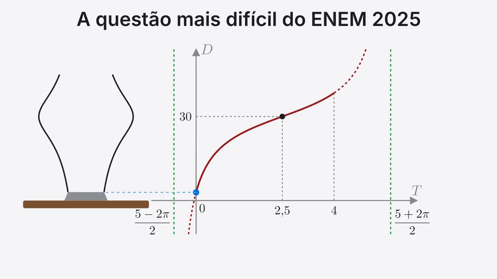
Quadro 0 e último quadro (loop): título + copo + gráfico.
“Essa é a questão mais difícil”
Enquanto você lê, a figura do INEP é redesenhada peça por peça (copo, torneira, eixos, curva, assíntotas). No fim ficam as três caixas k, m, p com interrogação: o mapa do vídeo.
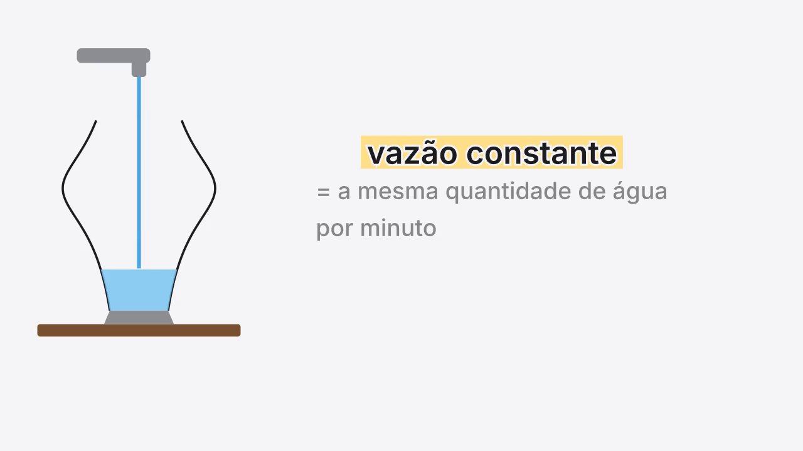
A questão sendo redesenhada: copo, torneira, vazão constante destacada.
“com vasão constante, a mesma quantidade de joca por minuto, D é a”
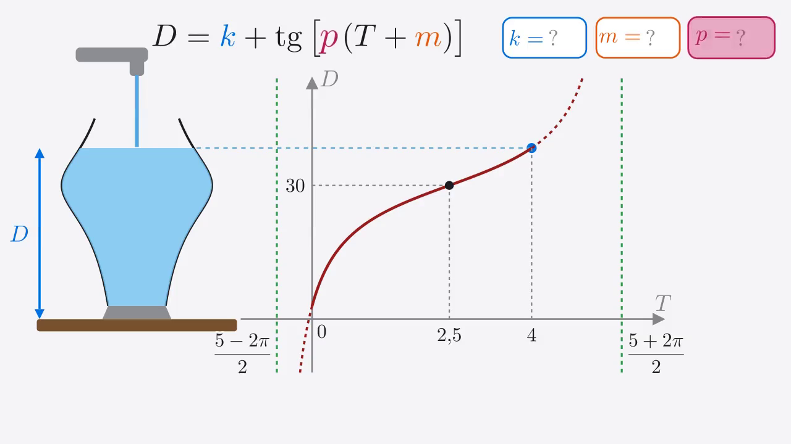
Figura completa com a fórmula e as caixas k, m, p.
“fica é, quanto vale K, P e M?”
Em 3D: primeiro o cubo enche no mesmo ritmo e o gráfico vira uma reta. Depois o vaso: camadas de mesmo volume, rápido onde é estreito, devagar onde é largo. Por isso a curva tem cara de tangente.
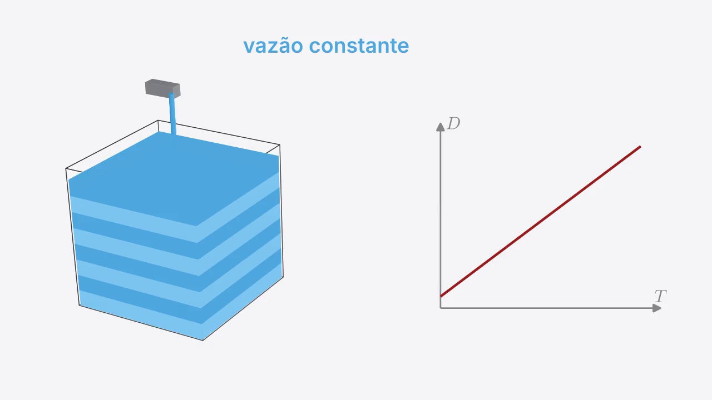
Cubo em 3D enchendo em camadas iguais; o gráfico ao lado é uma reta.
“no mesmo ritmo. então o gráfico é uma reta, Só que esse copo, perceba”
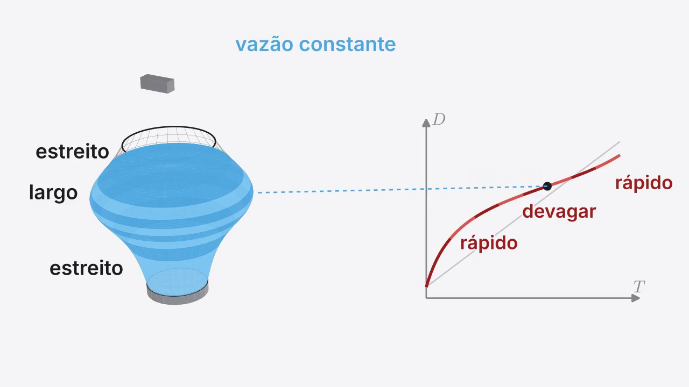
Vaso em 3D com camadas de mesmo volume, cada uma com a sua cor no gráfico.
“onde a curva quase deita, é o ponto 2 ,5 e 30.”
Tangente do zero, como uma rampa: quanto sobe para cada 1 que anda. 45° sobe 1, 80° quase 6, 90° vira parede (a assíntota). A rampa desenha o gráfico, que se repete a cada π.
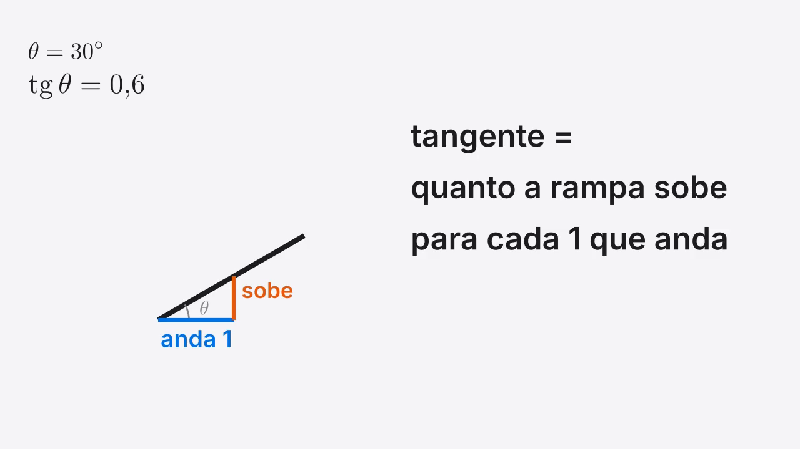
Rampa: o contador mostra quanto ela sobe para cada 1 que anda.
“essa rampa sobe para cada um passo que você anda para frente, uma rampa deitada,”
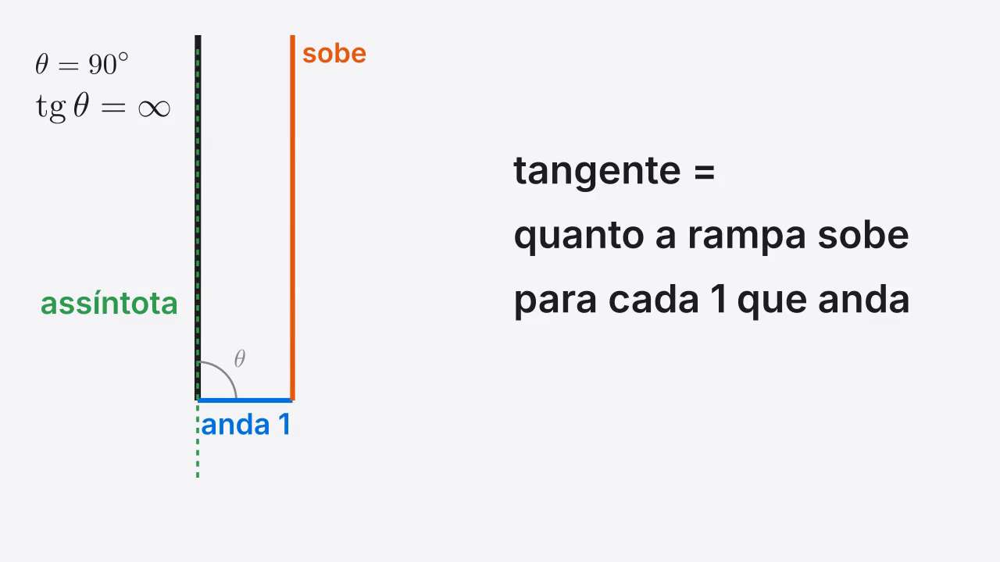
Rampa vira parede em 90°: nasce a assíntota.
“parede é a cítata, e se a rampa descer, a tangente fica”
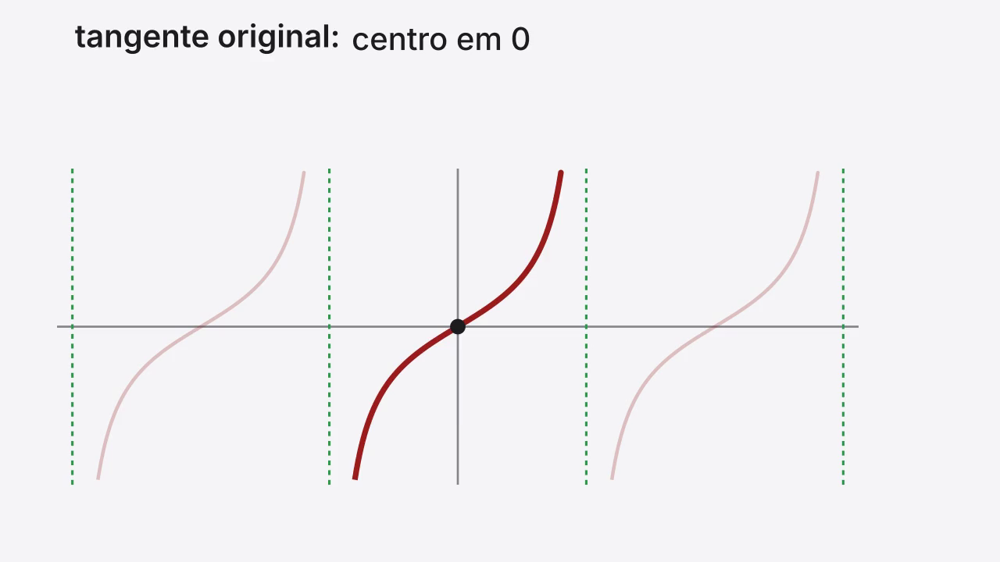
O gráfico se repete a cada π; ficha da tangente original no topo.
“tangente, o centro está no 0, na altura 0, e”
Os três movimentos com nomes fáceis: k elevador (sobe), m esteira (anda ao contrário do sinal), p sanfona (largura vira π/p). A tangente original fica cinza de fundo para comparar.
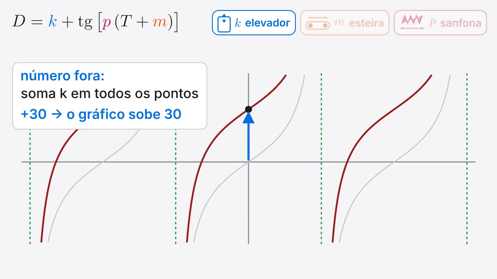
k elevador: o gráfico inteiro sobe.
“é como se você somasse 30 sobre 30 segundo, somar”
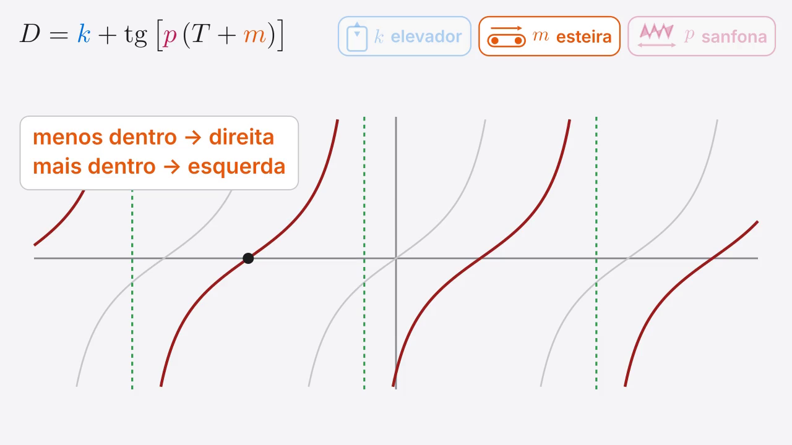
m esteira: menos dentro anda para a direita, mais dentro para a esquerda.
“mais dentro, esquerda terceiro, multiplicar”
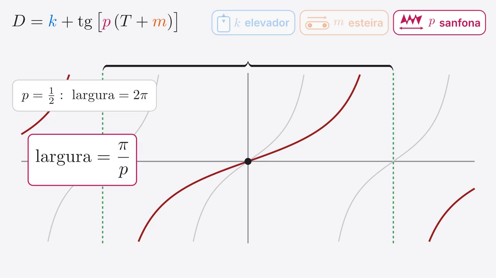
p sanfona: largura = π/p.
“a regra é, largura é igual pi”
A tangente original (cinza) é movida até cair em cima do gráfico do copo: elevador até 30, esteira até 2,5, conferência pelo meio das assíntotas, sanfona dobrando a largura. As caixas k, m, p vão sendo preenchidas.
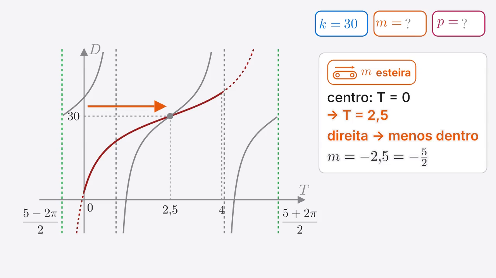
Esteira até 2,5: m = −5/2 entra na caixa.
“portanto, é a mesma coisa que dizer que é menos 5”
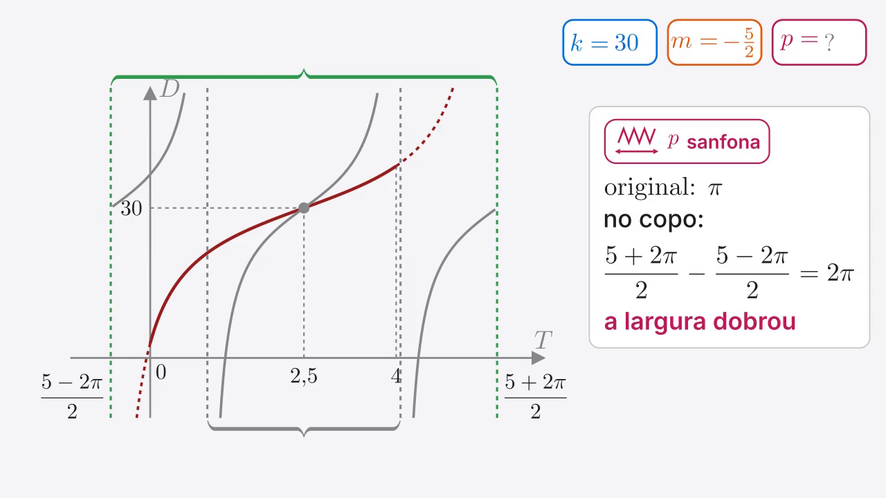
Largura dobrou: a tangente cinza estica e cai em cima do gráfico do copo.
“e sobra 2 pi, a largura dobrou, então o gráfico se esticou d”
Os valores das caixas voam para a fórmula, aparecem as cinco alternativas e a E acende. Atalho de prova: o 30 elimina A, B e C; o centro 2,5 elimina D. Fecha voltando ao primeiro quadro (loop).
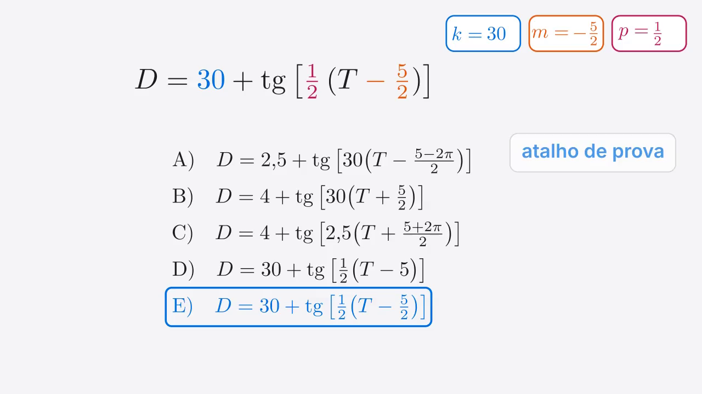
Fórmula montada e alternativa E destacada.
“portanto a alternativa é, e o atalho para a prova é sempre pensar o seguinte,”
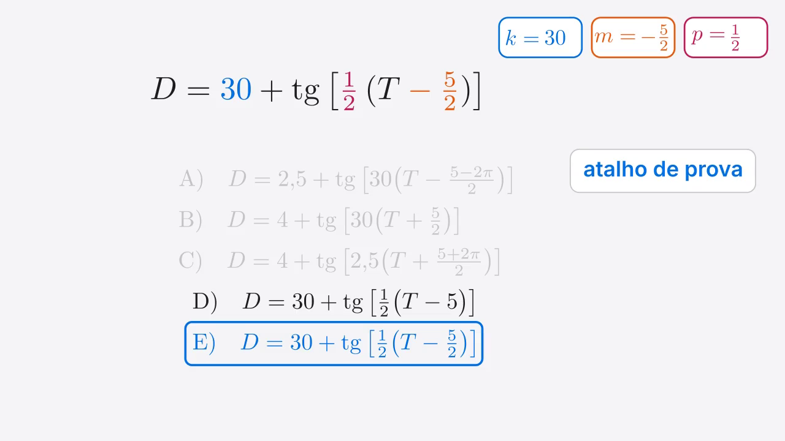
Atalho: A, B e C eliminadas pelo 30.
“e o centro tem 2 ,5, elimina d, o copo desenhou”